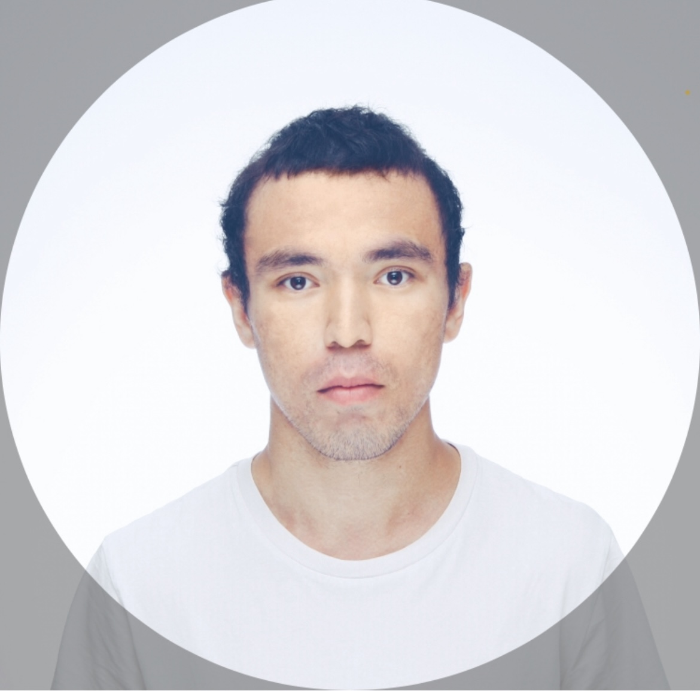

Магистрант НИЯУ МИФИ (направление «Информационная безопасность»). Учебная и самостоятельная практика: разбор логов Windows (Sysmon, PowerShell), развёртывание ELK на VPS, пентест веб-приложений в лабораторных (Burp Suite, OWASP Juice Shop, PortSwigger Academy), сетевое сканирование (Nmap).
Установка стека на VPS, сбор и просмотр логов в Kibana
SQLi, XSS, price manipulation, доступ к admin, backup-файлы
Sysmon и PowerShell: поиск IOC, этапы Kill Chain
Эндрю Таненбаум
Онлайн-курс (лабораторные работы)
НИЯУ МИФИ
10.04.01 «Информационная безопасность», программа «Безопасность информационных систем»
2025 — н.в.
Тюменский индустриальный университет
2012 — 2018